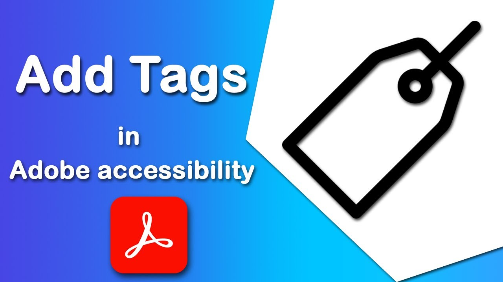

PDF accessibility ensures that documents
can be used by
everyone,
including people with visual, auditory,
or cognitive
disabilities.
Accessible PDFs work with screen readers,
keyboard navigation,
and assistive technologies.
Accessible PDFs are not just a requirement—they are a responsibility.
Making your documents accessible helps you:
• Reach a wider audience
• Comply with legal standards (WCAG, Section 508)
• Improve user experience for all
• Promote inclusivity and equal access

We provide professional PDF remediation services, including:
• Tagging and structuring documents
• Adding alternative text to images
• Fixing reading order
• Ensuring keyboard accessibility
• Compliance with WCAG 2.1 AA and PDF/UA standards